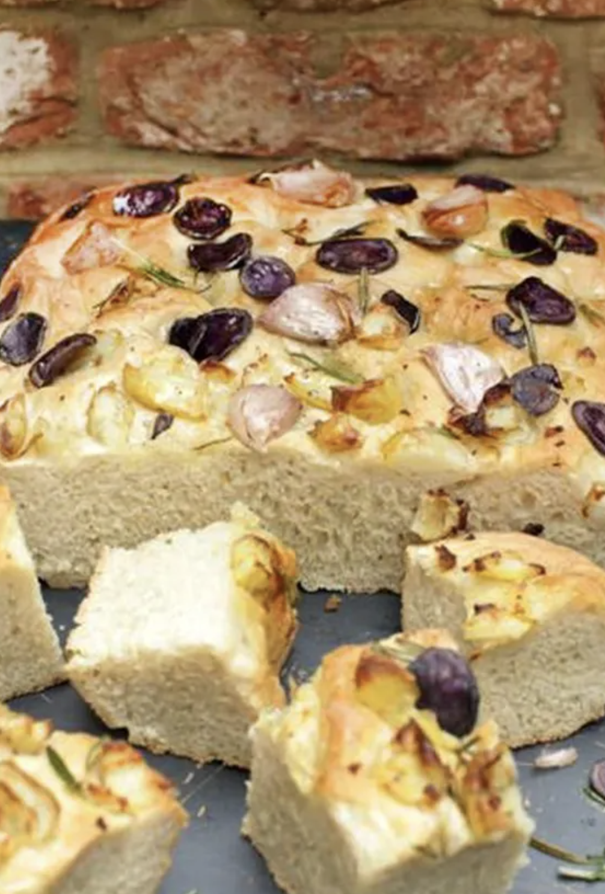

Potato and rosemary focaccia

Super easy to make. Not that bad nutrition-wise either.
Total Time: Prep time: 20 mins | Cook time: 60 mins
Ingredients
- 1 kg strong bread flour
- 1 x 7 g sachet of dried yeast
- sea salt
- freshly ground black pepper
- olive oil
- extra virgin olive oil
- olive oil
- a handful of Jersey Royal potatoes
- 3-4 purple potatoes
- 4 sprigs of fresh rosemary , leaves picked
- 1 bulb of garlic
Method
- Put the flour, yeast and 1 tablespoon of salt in a large bowl. Stir to combine and make a well in the middle. Gradually pour 650ml of lukewarm water into the well, continuously stirring and bringing in the flour as you go to form a rough dough.
- Transfer the dough to a flour-dusted surface and knead for around 10 minutes, or until smooth and springy. Place the dough in a lightly greased bowl, cover with a damp tea towel and leave to prove in a warm place for around 1 hour, or until doubled in size.
- Meanwhile, lightly grease a large baking tray. Once the dough has risen, knock it back with your fist and place on the oiled baking tray. Using your hands, spread it out to cover the tray, then drizzle with olive oil. Use your fingers to push down into the dough to make lots of little wells and dips./li>
- Meanwhile, preheat the oven to 200ºC/400ºF/gas 6. Add the Jersey Royals to a medium pan of boiling salted water, reduce the heat to medium and simmer for 10 to 15 minutes, or until cooked through. Drain and leave to cool in a colander. Meanwhile, finely slice the purple potatoes with a mandolin (use the guard!) and add to a bowl with the rosemary leaves.
- Separate and lightly crush the garlic cloves, then add to the bowl with a drizzle of olive oil and toss to combine. Evenly spread the potato mixture over the dough, crumble over the cooled Jersey Royals, drizzle with a little more olive oil and season with salt and pepper. Cover with a tea towel and leave in a warm place for another hour, or until doubled in size.
- Once risen, use your fingers to push down into the dough again to make lots of little wells and dips. Place in the hot oven for 25 to 30 minutes, or until golden and cooked through. Leave to cool slightly, drizzle with a little extra virgin olive oil and serve.